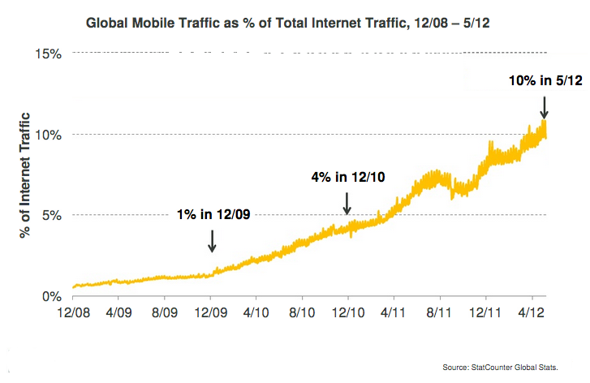
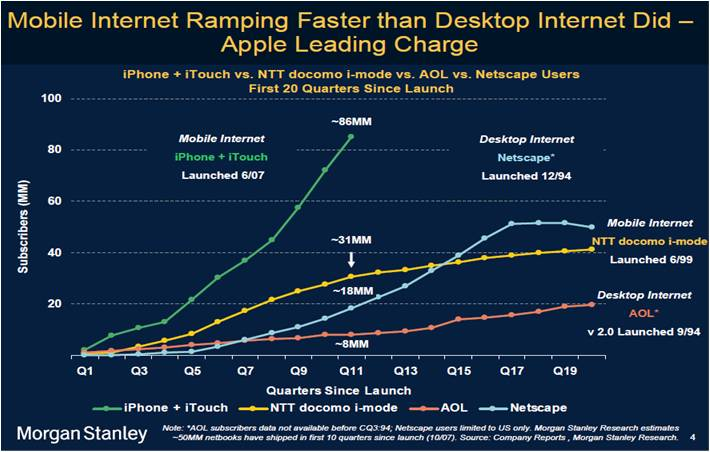
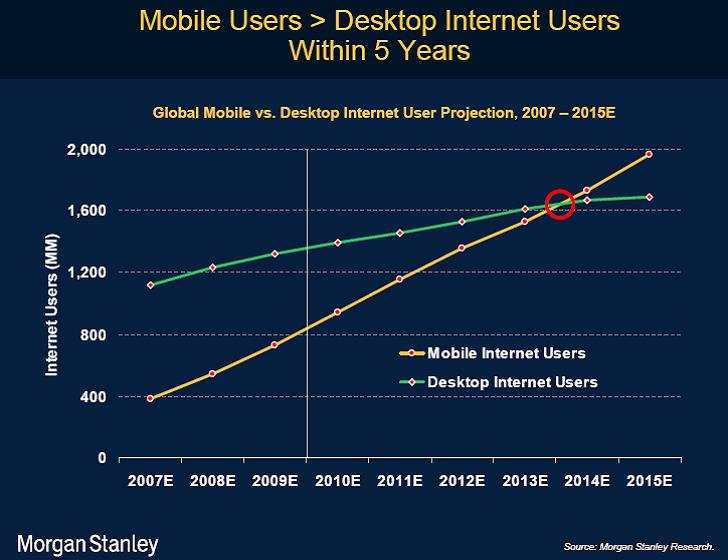
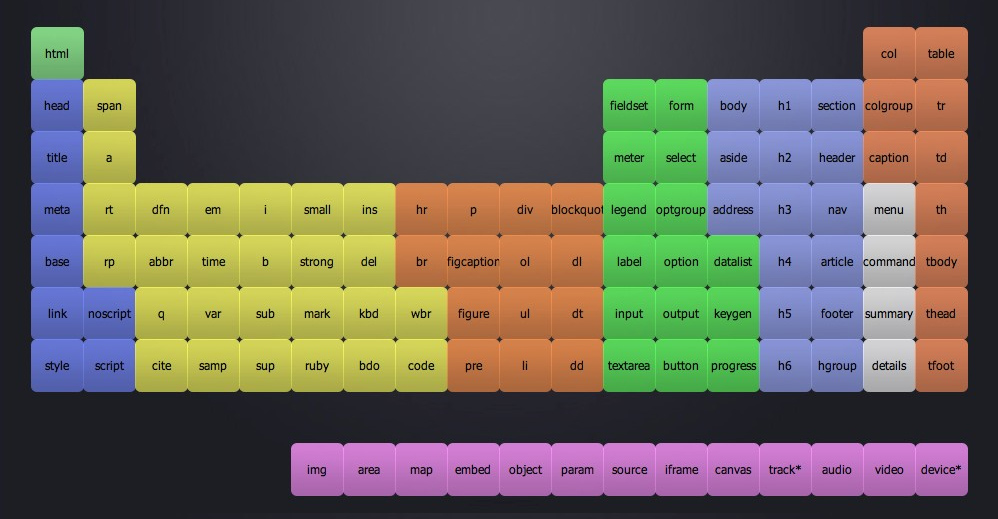
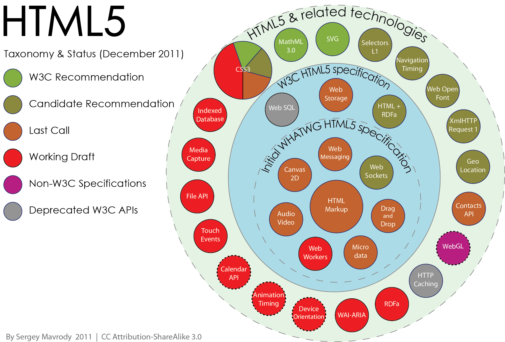

The Web
Today and the Future
by Eric Bollens
ebollens [GitHub] / ebollens [LinkedIn] / @ericbollens [Twitter]
In the Beginning
Imagine a console in your office... combining the features of a Touch-Tone telephone, a television set, a Xerox machine, and a small electronic computer.
Turned into a system of synchronous satellites, this console will bring the accumulated knowledge of the world to your fingertips.
Arthur C. Clark, Popular Science, May 1970

Tim Berners-Lee, Information Management: A Proposal, CERN, March 1989
WorldWideWeb: Proposal for a HyperTexts Project
Tim Berners-Lee and Robert Cilliau, November 1990
Marriage of hypertext and the Internet
UDI - Universal Document Identifier
HTML - HyperText Markup Language
HTTP - Hypertext Transfer Protocol
By Christmas, the first implementation was done
Growing the Web
Mosaic Web Browser
First notable graphical web browser
Media becomes a first-class citizen of the web
World Wide Web Consortium (W3C)
Standards based on royalty-free technology
so they could be adopted by anyone
The Web is Not Optional
By the late 1990's, almost every company had a website
Free publishing and marketing medium
The Dot-Com Era
Driven by low interest rates and new technology
Ideas bought for novelty, not business models
Boom turns to bust
but not all is lost
Web 2.0
Borne from dot-com successes
Amazon, eBay, Paypal, Google, Wikipedia, etc.
New era of the web
Rich Internet Applications
Web-oriented Architecture
Social Web
From information to interaction
Andrew McAfee's SLATES:
Search, Links, Authoring, Tags, Extensions, Signals
Ubiquitous Web
Wikis for information
Social Networks for communication
Blogs and Podcasts for publishing
Learning Management Systems for education
Online Stores for commerce
Anywhere and everywhere
at home... in the office... throughout the world
Rise of the Mobile Web
PocketWeb for Apple Newton
Nokia 9000 Communicator on Sonera or Radiolinja
WML, WAP and XHTML Mobile Profile
Touch screens and full-featured web browsers



The Web of Today
Mobile Pervasiveness
Mobile is now a necessity
Native Apps
iOS, Android, Blackberry, Windows Phone, etc.
Mobile Web Apps
jQuery Mobile, Sencha Touch, MWF, etc.
Hybrid Apps
PhoneGap, Titanium Appcelerator, etc.
Responsive Web Design
Twitter Bootstrap, Foundation, WebBlocks, etc.
Abolish the Device Barrier
Responsive is a start
but there's still a lot of work to be done!
New wave of technologies on the horizon
IndieUI, Web Intents, etc.
Web Platform is Everywhere
Browsers are getting better
Mobile, tablet, desktop and more
Offline app support
Breaking out of the browser
Today's Challenges
Offline Support
Appcache is challenging
appcache is based upon a number of high-level and faulty assumptions about how applications will want to cache data
Jake Archibald, Application Cache is a D#%$@bag, May 2012
WebSQL was abandoned
IndexedDB is harder for many to grasp
Local Storage is in flux
Device Features
Not all browsers have or expose native features
Not all devices have certain native features
Slew of new specs starting to provide access
Media Capture, Touch Events, Vibration API, Web Notifications, File API, Contacts API, Calendar API, Geolocation API, DeviceOrientation Event, Battery Status API, Proximity Events, Ambient Light Events, Near Field Communications, etc.
Performance
Javascript is an interpreted language
Abstraction from underlying hardware at cost of performance
Advances are coming with each browser release
OdinMonkey can run Unreal Engine 3
Many things still feel hacky
Animating with CSS
Mobile click events
and many more...
Not Everyone is Convinced
Kiran Prasad, Senior Director for Mobile Engineering:
more people are spending more time in the app,
and the app is running out of memory
trying to get... [animation] smoothness...
felt like we needed native to really do that well
There are a few things that are critically missing...
tooling support ... debugger that works ... performance tools
Mark Zuckerberg, Chief Executive Officer:
The biggest mistake we made as a company
was betting too much on HTML5 rather than native
It's so clearly the wrong strategy for us...
sounds juicy... [but] it doesn't move the needle for us
Still, there's hope!
Jo Rabin, W3C Mobile Web Platform Community Group:
As web capabilities and the coherence of web standards improve, there will be no reason to write… applications using anything other than web technologies
To my mind it’s a question of manifest destiny
Getting to HTML 5
The Making of a Standard
Over 20 years and 5 editions old
and yet stuff from 1990 still works
even though no browser from 1990 still exists
Formed by discussion and debate
Browser makers
Authors
Standards folks
Others
Not always smooth going
A Fresh Start after HTML 4
W3C shipped HTML 4.0 in Dec 1997
and shut down the HTML Working Group
"Fresh start" announced based on XML tag-set
A Fumble with XHTML 1.0
XHTML Extended Forms in August 1999 sets the tone
Goals for the next generation…
are incompatible with preserving
backwards compatibility
Appendix C "loophole"
Use something that looks kind of like XHTML syntax,
but keep serving... text/html MIMEtype
And that's what everyone did
The Failing of XHTML 1.1
W3C publishes XHTML 1.1 in May 2001
Closes Appendix C loophole
Draconian error handling
XML must be well-formed
99% of HTML pages have errors
Never gains wide-spread use
A Fissure in the Community
Mozilla and Opera present a competing vision
- Backwards compatibility with clear migration path
- Well-defined error handling
- User should not be exposed to authoring mistakes
- Practical use
- Scripting is here to stay
- Device-specific proviling should be avoided
- Open processes
W3C refuses to devote resources
Web Hypertext Application Technology WG is born
WHATWG Forges Ahead
Won't break backwards compatibility
Doesn't scrap the past
"Retrospec" what's already there
Designs forgiving error handling
based on what's already there
Early products include
Web Forms 2.0
Canvas
Audio and Video
WHATWG and W3C Reunite
XHTML wasn't picking up steam
and shipped code wins
In October 2006, W3C announces it will
work with WHATWG
rename Web Applications 1.0 to HTML 5
XHTML 2 is abandoned in October 2009
Today
WHATWG maintains "HTML Living Standard"
W3C defines snapshots such as HTML 5.0 and 5.1
Relationship is still evolving
HTML 5 (and Friends)
Official Definition
Web Applications 1.0
Web Forms 2.0
Web Controls 1.0
Elements of HTML 5

New Form Features
Input Types and Control Features
Validation Expressions
Templating and Deleting
HTML 5 as an Ecosystem

CSS 3
Tackled as modules
Formal Recommendations
Media Queries, Namespaces Module, Selectors Level 3, Color Module Level 3
Candidate Recommendations
Backgrounds and Borders Module Level 3, Multi-column Layout Module, Values and Units Module Level 3
Working Drafts
Grid Layout Module Level 1, Template Layout Module, Shapes Module Level 1
Media
SVG
Adaptive Images
WebGL
HTTP Live Streaming
And Many More
WAI-ARIA
IndexedDB
Native Access
Performance
Threading
Canvas proxy
Web Workers
Hardware-accelerated Effects
CSS Transitions and Animations
Web Animations 1.0
WebGL
Telemtry Exposure
Battery Status API
Timing APIs
Visibility API
Native Access
Numerous APIs in the works
|
Media Capture
Speech Touch Events DeviceOrientation Events Proximity Events Ambient Light Events Near Field Communication |
Web Notifications
File API Contacts API Calendar API Geolocation API Vibration API Geolocation API |
And many more...
When is HTML 5 Official?
W3C spec development is laborious
Repetitious last call / formal objection cycle
But the process is changing
Modification of objection process
Modularizing with Extension Specifications
Splitting work into HTML 5.0 and 5.1
HTML 5.0 Formal Recommendation by end of 2014
but you can mostly use it today
What about HTML 5.1?
Getting HTML 5 out the door meant dropping things
Picks up where HTML 5 left off
All features of the HTML 5 Candidate Recommendation
plus unstable features that were excluded
HTML 5.1 Formal Recommendation by end of 2016
Looking to the Future
Work is already underway
HTML.next
CSS 4
Web Components
Rich Widget Library
template
decorator
content
element
dvcs.w3.org/hg/webcomponents/raw-file/tip/explainer/index.html
Web Intents
Client-side service discovery
Inter-app communication
IndieUI
Abstraction between device interaction and inferred intent
As an example, consider UNDO
CTRL+Z on Windows/Linux
CMD+Z on Mac OS X
Shake on some mobile devices
Break down the device barrier
Media
Responsive and Adaptive Images
Adaptive Streaming
Full-screen and Screenshots
CSS 4
Ascending selector
New pseudo-selectors
:matches
:local-link
:scope
:nth-match, :nth-last-match
:column, :nth-column, :nth-last-column
Other new modules and levels
Get Involved
Contribute your own ideas for HTML.next
http://www.w3.org/wiki/HTML/next
Learn more about the future of CSS
http://wiki.csswg.org/spec
Web 3.0
The intelligent Web
- such as… semantic web, miroformats, natural language search, data-mining, machine learning, recommendation agents and artificial intelligence technologies -
[will] emphasize machine-facilitated understanding
John Markoff, New York Times, 2006
Guessing the Future is Risky
There is no reason for any individual
to have a computer in his home.
Ken Olsen, founder of DEC (1977)
I see little commercial potential for the internet
for the next 10 years.
Bill Gates, founder of Microsoft (1994)
The internet will soon go spectacularly supernova
and in 1996 catastrophically collapse
Robert Metcalfe, inventor of Ethernet (1995)
No chance that the iPhone [will] get any significant market share.
Steve Ballmer,CEO of Microsoft (2007)
Still, the Future Looks Bright!
Ubiquitous connectivity
Service accessibility
Semantic web technologies
Distributed computing and databases
Open identity, reputations and data
Intelligent applications
Thank You
and welcome to MMWCON 2013
ebollens.github.io/presentations/web-today-future
ebollens [GitHub] / ebollens [LinkedIn] / @ericbollens [Twitter]